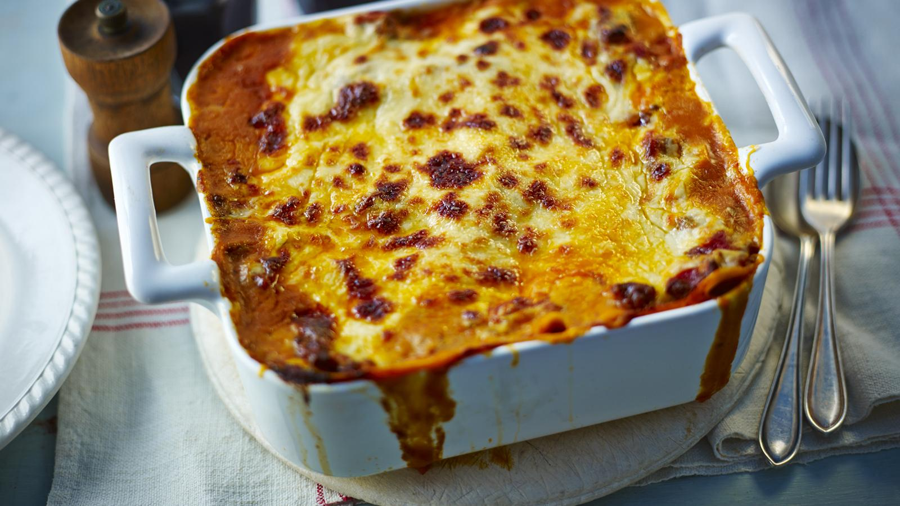

Home
Lasagne al forno

Description
This is Mary's classic lasagne recipe which has been perfected over the years. For the best results leave the lasagne to stand for six hours before cooking.
Each serving provides 861 kcal, 50g protein, 56g carbohydrates (of which 17g sugars), 47g fat (of which 23g saturates), 5.5g fibre and 1.4g salt.
Ingredients
For the ragu
- 2 tbsp olive oil
- 900g/2lb beef mince
- 2 onions, roughly chopped
- 4 sticks celery, finely chopped (optional)
- 2 garlic cloves, crushed
- 2 level tbsp plain flour
- 150ml/¼ pint beef stock
- 1 tbsp redcurrant jelly or 1 tsp caster sugar (optional)
- 3 tbsp tomato purée
- 1 tbsp chopped thyme
- 2 x 400g tins chopped tomatoes
For the white sauce
- 50g/2oz butter
- 50g/2oz plain flour
- 750ml/1¼ pints hot milk
- 2 tsp Dijon mustard
- 50g/2oz Parmesan, finely grated
- salt and freshly ground black pepper
For the lasagne
- 12 lasagne sheets
- 75g/3oz mature cheddar, grated